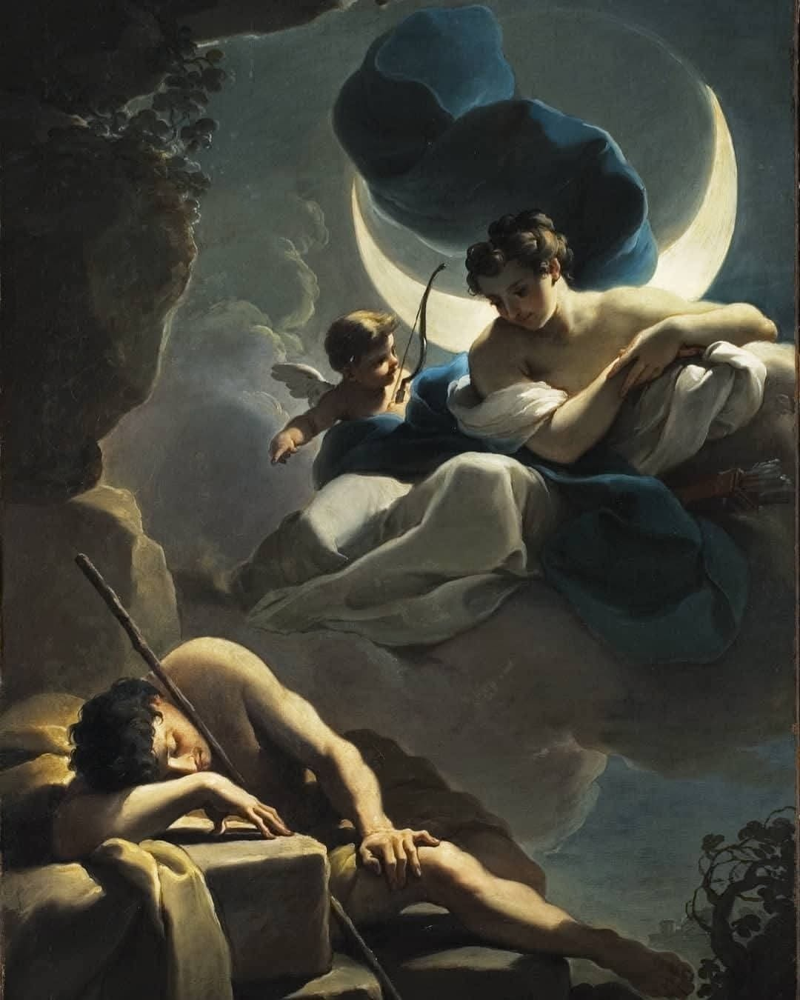
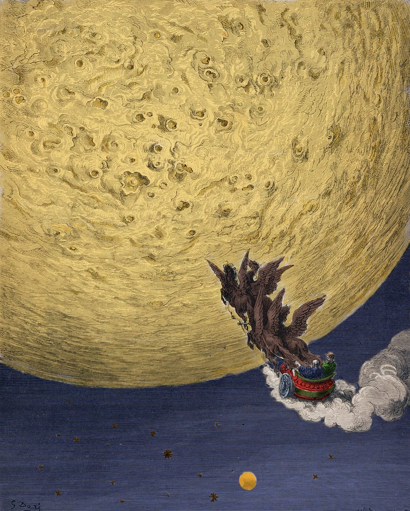

El 20 de abril de 1972, Charles Duke —con treinta y seis años, el astronauta más joven en pisar la Luna— depositó en el suelo del Mar de Descartes una fotografía. En ella aparecía junto a su esposa Dorothy y sus dos hijos: un retrato de estudio, poses rígidas, ropa de domingo, fondo neutro. En el reverso había escrito a mano:1
“This is the family of astronaut Charlie Duke from planet Earth who landed on the moon on April 20, 1972.”
Luego se alejó. La imagen quedó boca arriba, mirando el cielo negro.

Cincuenta y cuatro años después, la fotografía sigue allí. La radiación ultravioleta habrá borrado los colores —sin atmósfera que la filtre, la superficie lunar blanquea cualquier emulsión en cuestión de décadas— pero el papel permanece. Y en el reverso permanece, aunque ya no pueda leerse, el nombre escrito. No fue depositada: fue inscrita. La diferencia entre esas dos cosas es el asunto de este ensayo.
Duke creyó estar haciendo algo personal, casi íntimo. Estaba, en realidad, repitiendo un gesto que la humanidad practica desde hace milenios: dejarle algo a la luna para que lo custodie. Lo que este ensayo propone es que ese gesto no es una metáfora ni una superstición residual, sino una fórmula —una forma específica de acción simbólica que reaparece, sin planificación y sin continuidad consciente, a través de culturas y siglos— cuyo núcleo invariante es el nombre. No depositar algo. Depositar algo con un nombre.
I. La diosa que detiene el tiempo
Antes de convertirse en objeto científico, la luna fue una persona. Las culturas mediterráneas antiguas la nombraron Selene, Luna, Ártemis, y le atribuyeron entre sus poderes uno particularmente singular: el de sustraer a los mortales del flujo del tiempo.
El mito de Endimión es la formulación más completa de esa capacidad. Según las versiones que recogen Pausanias y Cicerón, Selene se enamoró de un pastor de extraordinaria belleza que dormía junto a sus rebaños en una gruta del monte Latmos, en Caria.2 Incapaz de tolerar que él envejeciera y muriera, pidió a Zeus que le concediera el sueño eterno: una existencia suspendida, sin conciencia ni deterioro. Cada noche, Selene bajaba a visitarlo. De esa unión entre la diosa inmortal y el mortal dormido nacieron cincuenta hijas, las Menae, que representaban los meses lunares del ciclo olímpico.

La luna, en este mito, no arrebata: conserva. No destruye la belleza que ama; la fija en el punto exacto de su esplendor. Selene no retiene a Endimión para sí: lo mantiene en el umbral entre la vida y la muerte, en el estado que los griegos llamaban hypnos —el sueño como hermano de Tánatos. Lo que ama no es al hombre, sino la forma del hombre. Y para preservar la forma hay que detener el proceso.
Esta es la primera definición de archivo que la tradición occidental produce para la luna: el lugar donde algo deja de cambiar para seguir existiendo. No un almacenamiento inerte, sino una suspensión activa. Una custodia que requiere que lo custodiado permanezca inmóvil.
La ironía que Ariosto desarrollará cinco siglos después ya está contenida aquí: la luna preserva lo que ama a condición de que eso que ama no pueda ya hacer nada.
II. El inventario de lo que se pierde
En 1532, Ludovico Ariosto publica la versión definitiva de su Orlando Furioso. El Canto XXXIV contiene uno de los episodios más extraordinarios del Renacimiento: el viaje del paladín Astolfo a la Luna para recuperar el juicio perdido de Orlando.
La elección del protagonista no es casual. Astolfo es el personaje menos indicado para una misión filosófica: inglés, extravagante, habitualmente cómico, transformado antes en arbusto por una hechicera y de regreso al poema montado en un hipogrifo alado. Que sea él —el bufón— quien recibe la misión más seria del poema es parte del argumento de Ariosto: la sabiduría, cuando aparece, llega por los caminos menos pensados.

Lo que Astolfo encuentra en la Luna es una geografía especular de la Tierra: los mismos ríos, los mismos valles, las mismas montañas, pero en otra dimensión. Y en una gran hondonada del terreno, un inmenso depósito de todo lo que los hombres pierden en su vida terrena. Los sueños incumplidos, la fama de los poderosos, las oraciones de los moribundos, el tiempo malgastado en el juego. Todo catalogado, todo conservado. La luna de Ariosto es un archivo perfecto e irónico:3
Qui si trovava ciò che si perdeva / o per nostro peccato o per fortuna: / ciò che si perde qui, là si ritrovava, / dimani dando quel che oggi non dava.
(“Aquí se encontraba todo lo que se perdía / ya por nuestro pecado, ya por fortuna: / lo que aquí se pierde, allá se recobra / dando mañana lo que hoy no se daba.”)
La clave de la ironía ariostesca es lo que no está en la luna: la locura. Los hombres la guardan ellos mismos, con cuidado, como si fuera un tesoro. Solo la razón —esa rareza— termina almacenada en el satélite, en ampollas etiquetadas con los nombres de sus propietarios. La más grande lleva escrito: Senno d’Orlando.
El detalle del etiquetado no es decorativo. Cada ampolla lleva el nombre de su dueño: sin nombre, la razón sería indistinguible de la de otro. El archivo lunar de Ariosto no es un depósito anónimo; es un catálogo nominal. Lo que se guarda allí no es una sustancia genérica llamada “razón” sino la razón de este hombre, que tiene un nombre y que alguien reclama. La ampolla sin nombre sería un objeto; con nombre, es una pertenencia.
Astolfo inhala la suya para volverse cuerdo, toma la de Orlando y vuela de regreso. La escena no ha perdido ni su comicidad ni su amargura: la razón humana es tan escasa que cabe en una ampolla, y tan valiosa que hay que ir a la Luna a buscarla.
Pero la arquitectura simbólica del episodio trasciende la sátira. Ariosto piensa la luna como el reverso necesario de la Tierra: no un lugar opuesto, sino un depósito complementario. Lo que aquí se gasta, allá se conserva. Lo que aquí se fragmenta, allá permanece entero. Es un cosmos de doble fondo, y la luna es el cajón secreto de lo que no tiene lugar entre los vivos.
III. La sátira del duelo
Ciento ochenta años después de Ariosto, Alexander Pope recoge el mismo gesto y lo traslada al interior de la aristocracia londinense. En la versión definitiva de The Rape of the Lock (1714–1717), el poema cómico-heroíco que escribió para apaciguar un conflicto entre dos familias católicas —provocado por el robo de un rizo de cabello— Pope necesita, al final, un destino para el mechón perdido. La solución es ariostesca, aunque nadie en Londres la llamara así:4
Some thought it mounted to the Lunar Sphere, / Since all things lost on Earth are treasur’d there.
(“Algunos creyeron que había ascendido a la Esfera Lunar, / pues todo lo que se pierde en la Tierra se atesora allí.”)
Pope procede a enumerar el inventario del archivo celeste: los votos rotos, las promesas de los cortesanos, el tiempo de las damas desperdiciado, las lágrimas de los herederos, los suspiros de los amantes, las oraciones de los moribundos. Una feria de vanidades clasificada con la precisión de un archivero satírico.
Lo que Pope hereda de Ariosto —y transforma— es la doble naturaleza del archivo lunar. En el italiano, el inventario es melancólico bajo la capa irónica: lo que se pierde es la razón, y eso es una tragedia que se disfraza de broma. En Pope, el inventario es fundamentalmente social: lo que se pierde son las promesas y los afectos que la vida de corte exige y que nunca tuvieron sustancia real. La luna guarda, en The Rape of the Lock, lo que nunca existió del todo. Es el repositorio de la hipocresía, no de la pérdida genuina.
Y sin embargo. En el fondo de la sátira de Pope hay algo que la ironía no termina de cubrir: la insinuación de que incluso las cosas frívolas merecen un lugar donde existir después de desaparecer. Incluso el rizo de Belinda. Incluso las promesas que nadie cumplió. La luna de Pope es irónica en su superficie y genuinamente elégiaca en su fondo: archiva lo que no merece ser archivado, y eso la hace el archivo más democrático de la tradición.
IV. El pastor que pregunta
Si Ariosto y Pope le hablan a la luna en términos de inventario —¿qué guardas?, ¿qué has acumulado?—, Giacomo Leopardi le formula, en 1829, la pregunta más directa y más desesperada de toda esta genealogía. El poema se llama Canto notturno di un pastore errante dell’Asia, y abre con unos versos que son a la vez el resumen de todo lo anterior y su refutación:5
(“¿Qué haces tú, luna, en el cielo? dime, qué haces, / silenciosa luna? / Subes por la tarde y vas / contemplando los desiertos; luego te posas.”)
El pastor de Leopardi no tiene inventario que hacer ni razón que recuperar. Tiene solo la pregunta sin respuesta: ¿para qué? La luna sube, va, se posa. Es testigo de la existencia humana y no dice nada. No acumula, no devuelve, no explica. Contempla los desiertos con una indiferencia que Leopardi llama hermana de la crueldad.
El pastor le sigue hablando, sin poder evitarlo. La interpela siete veces a lo largo del poema. No porque espere respuesta: porque hablar es lo único que tiene. La luna es el interlocutor perfecto para el duelo —siempre presente, sin juicio, sin olvido, sin interrupción.
Leopardi introduce en la genealogía algo que Ariosto y Pope no podían o no querían ver: que el archivo celeste no alberga solo objetos perdidos sino también preguntas sin solución. Lo que la luna guarda, en este poema, es el lamento mismo. No la razón, no el mechón, no los votos incumplidos: el acto de preguntar sin que nadie responda. Y ese acto, repetido durante siglos, es el más fiel de todos.
V. El romanticismo y la identificación con el archivo
John Keats abre su Endymion (1818) con un verso que toda la tradición romántica inglesa podría haber firmado: “A thing of beauty is a joy for ever.”6 El poema —que toma el mismo pastor griego que Selene amó— es, entre otras cosas, una meditación sobre la imposibilidad de poseer lo que se ama. El pastor busca a la diosa. Pero la diosa de Keats no es ya la fuerza que congela el tiempo: es la belleza que huye, que solo puede alcanzarse en el sueño o en la muerte.
El movimiento que el romanticismo introduce en esta genealogía es decisivo. Gérard de Nerval lo formula con precisión en El Desdichado (1854):7
Je suis le ténébreux, — le veuf, — l’inconsolé, / Le Prince d’Aquitaine à la tour abolie: / Ma seule étoile est morte, — et mon luth constellé / Porte le Soleil noir de la Mélancolie.
(“Soy el tenebroso, el viudo, el inconsolado, / el Príncipe de Aquitania en la torre abolida: / mi única estrella ha muerto, y mi laúd constelado / lleva el Sol negro de la Melancolía.”)
Nerval no le habla a la luna: habla desde la luna. El poeta mismo se ha convertido en un objeto del archivo celeste —en algo que ha perdido su lugar entre los vivos y existe ahora solo en ese espacio suspendido donde van las cosas que el mundo ya no puede sostener. La inversión es completa: ya no somos quienes depositan algo en la luna, sino quienes se reconocen como depositados allí.
Esta inversión no es un desvío de la genealogía sino su profundización. El romanticismo descubre que el gesto de archivar en la luna implica siempre una identificación con lo archivado: cuando dejamos algo allí, nos estamos dejando un poco a nosotros mismos. El archivo celeste no es un lugar externo donde guardamos nuestras pérdidas; es el lugar donde proyectamos lo que somos cuando perdemos.
VI. El nombre inscripto: una fórmula de pathos
A lo largo de esta genealogía ha reaparecido, sin excepción, el mismo núcleo formal: alguien deposita algo en la luna y se asegura de que lleve un nombre. El senno de Orlando lleva escrito “Orlando”. El inventario de Pope incluye los nombres de los afectos perdidos. El pastor de Leopardi interpela a la luna por su nombre —“silenciosa luna”— como si nombrándola pudiera hacerla responder. Duke escribe en el reverso de la fotografía quién es, de dónde viene, cuándo llegó.
En términos warburgianos, esto es un Pathosformel: una fórmula de pathos que migra a través del tiempo sin planificación consciente, porque responde a una necesidad emocional que precede a cualquier sistema simbólico.8 El gesto no es depositar algo en la luna. La fórmula completa es depositar algo con un nombre. Porque depositar sin nombrar es abandonar. El nombre es lo que convierte el abandono en custodia.
Esta distinción —abandono / custodia— organiza todo lo que antecede. Selene no abandona a Endimión: lo nombra en el mito que lo preserva. Ariosto no arroja la razón de Orlando al espacio: la etiqueta, la cataloga, la custodia en espera de que alguien la reclame. Pope no dispersa los votos rotos al viento: los inventaría, les da un lugar en el orden del poema. Leopardi no lanza preguntas al vacío: las dirige, por nombre, a una interlocutora que existe en la medida en que es interpelada.
El nombre es la condición mínima del archivo. Sin él, lo depositado no es una pertenencia sino un resto.
Esta fórmula no pertenece a ningún sistema de creencias particular. Atraviesa la comedia renacentista de Ariosto, la sátira neoclásica de Pope, el duelo romántico de Nerval y el laicismo científico de un astronauta de la NASA que escribe a mano en el reverso de una fotografía familiar antes de dejarla sobre el polvo gris del Mar de Descartes.

VII. El cráter Carroll
El 6 de abril de 2026, mientras la nave Orion se alejaba de la Luna a 252.756 millas de la Tierra, el astronauta canadiense Jeremy Hansen tomó la radio y se dirigió a Control de Misión. La tripulación, dijo, quería proponer un nombre para un cráter sin denominar, ubicado en la frontera entre la cara visible y la cara oculta.
El nombre propuesto era Carroll. En honor a Carroll Wiseman, esposa del comandante Reid Wiseman, fallecida en mayo de 2020 tras cinco años de lucha contra el cáncer. La respuesta de Control de Misión llegó después de un momento de silencio: “Carroll Crater, loud and clear.”9
Reid Wiseman no dijo nada durante unos segundos. Sus hijas, Katey y Ellie, lo veían todo desde la sala de visitantes del Centro Johnson en Houston. Después del diagnóstico de Carroll, la familia había empezado a enviarle fotos de la luna para recordarle por qué seguía adelante: la luna había sido, en esos años oscuros, el hilo que unía el duelo con el futuro. «Era como si llevara el legado de ella conmigo», diría Wiseman más tarde.
El cráter Carroll no tiene aún nombre oficial. La propuesta formal debe ser ratificada por la Unión Astronómica Internacional, un proceso que puede tardar meses o años. Pero el nombre ya fue pronunciado. Fue dicho desde el espacio, en dirección a la superficie que lo recibirá, en presencia de cuatro testigos humanos y de los millones que seguían la transmisión en vivo.
Hay algo en esto que Ariosto reconocería de inmediato. La ampolla más grande del archivo lunar lleva el nombre escrito por fuera. El cráter más personal de esta misión llevará el nombre de una mujer que nunca salió de la Tierra. Lo que el amor no puede retener en el tiempo, lo inscribe en la piedra.
La fotografía de Charles Duke sigue en el suelo del Mar de Descartes. Está desteñida, probablemente en blanco, irreconocible como imagen. Pero el papel está. Y en el reverso, aunque ya no pueda leerse, el mensaje escrito a mano:
“This is the family of astronaut Charlie Duke from planet Earth who landed on the moon on April 20, 1972.”
Nadie lo leerá. Eso no importa, o importa de otra manera. No fue escrito para ser leído en la luna. Fue escrito para existir allí: donde la radiación borra los colores pero no disuelve el papel, donde no llueve ni hay viento, donde el tiempo no transcurre en el sentido en que los humanos lo conocemos. Duke no dejó datos científicos ni instrumentos de medición. Dejó cuatro nombres en el único lugar que no se los devolvería jamás, porque no tiene adónde devolverlos.
La luna no opera sobre lo que guarda. No lo procesa, no lo transforma, no lo devuelve. Esa es su perfección como archivo: recibe el senno de Orlando y el mechón de Belinda y la fotografía de una familia de Carolina del Norte y el nombre de Carroll Wiseman sin establecer jerarquía entre ellos, sin interrogar el mérito de ninguno. Guarda sin comprender. Custodia sin juzgar.
Leopardi le preguntó qué hacía allá arriba, silenciosa. La luna no respondió entonces. No responde ahora. Pero seguimos depositando nombres en su superficie, como si el silencio fuera una forma de recibir.
El cráter Carroll estará allí cuando ya no quede nadie que recuerde a Carroll Wiseman. Como la foto de Duke estará allí cuando ya no quede nadie que recuerde al hombre que la dejó. La luna guarda lo que la Tierra no puede sostener, sin prometernos que eso signifique algo.
Y, sin embargo, seguimos llevándole cosas.
Mercedes Dellatorre, mayo de 2026
Notas
Charles M. Duke caminó sobre la Luna el 20 de abril de 1972 durante la misión Apollo 16, convirtiéndose con 36 años en la persona más joven en hacerlo. El mensaje en el reverso decía: “This is the family of astronaut Charlie Duke from planet Earth who landed on the moon on April 20, 1972”. Fuente: Sumit Kumar, The Sunday Guardian Live, 10 de abril de 2026.
↩Pausanias, Descripción de Grecia, V.1.4–5; Cicerón, De natura deorum, II.xi. Las cincuenta hijas de la unión —las Menae— representaban los meses lunares del ciclo olímpico de cuatro años.
↩Ludovico Ariosto, Orlando Furioso, Canto XXXIV, ottave 69–87 (1532). Las citas en español siguen la traducción de Jerónimo de Urrea (Amberes, 1549).
↩Alexander Pope, The Rape of the Lock, Canto V, vv. 113–120 (versión definitiva, 1717).
↩Giacomo Leopardi, «Canto notturno di un pastore errante dell’Asia», en Canti (1835), vv. 1–4. Traducción propia del italiano.
↩John Keats, Endymion: A Poetic Romance (Londres: Taylor and Hessey, 1818), Libro I, v. 1.
↩Gérard de Nerval, «El Desdichado», en Les Chimères (París, 1854). La cita corresponde al primer cuarteto.
↩Sobre el Atlas Mnemosyne de Warburg y el concepto de Pathosformel, véase el Ensayo I de este dossier.
↩El nombre fue propuesto el 6 de abril de 2026. Jeremy Hansen comunicó a Control de Misión: “We would like to suggest it be called Carroll”. Respuesta: “Carroll Crater, loud and clear”. La propuesta debe ser ratificada por la Unión Astronómica Internacional. Carroll Wiseman falleció en mayo de 2020. Fuentes: Newsweek; E! Online, 6 de abril de 2026.
↩
Referencias
- Ariosto, Ludovico. Orlando Furioso. Canto XXXIV. Ferrara, 1532. Traducción al español de Jerónimo de Urrea. Amberes: Martín Nucio, 1549.
- Duke, Charles M. y Dotty Duke. Moonwalker. Nashville: Oliver Nelson, 1990.
- Keats, John. Endymion: A Poetic Romance. Londres: Taylor and Hessey, 1818.
- Kumar, Sumit. «Did You Know an Astronaut Left a Family Photo on the Moon? It May Still Be There After 50 Years». The Sunday Guardian Live, 10 de abril de 2026.
- Leopardi, Giacomo. «Canto notturno di un pastore errante dell'Asia». En Canti. Florencia: Piatti, 1835.
- NASA. Artemis II Mission Overview. Washington D.C.: NASA, 2024.
- Nerval, Gérard de. «El Desdichado». En Les Chimères. París: Giraud, 1854.
- Pausanias. Descripción de Grecia. Siglo II d.C. Traducción de María Cruz Herrero Ingelmo. Madrid: Gredos, 1994.
- Pope, Alexander. The Rape of the Lock. Londres: Bernard Lintot, 1714. Versión definitiva: 1717.
- Warburg, Aby. Atlas Mnemosyne [1924–1929]. Edición de Martin Warnke y Claudia Brink. Berlín: Akademie Verlag, 2000. Traducción al español: Madrid: Akal, 2010.